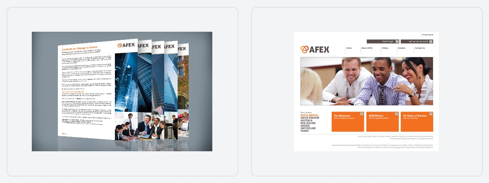

Investing in “a world of experience”
Challenge
In the world of international payment and foreign currency exchange services, AFEX (Associated Foreign Exchange) stands apart as one of the major non-banking institutions specializing in FX. With an aging identity and opportunity to ramp up communications efforts, AFEX engaged Finch Brands to conduct a full strategic and creative re-branding exercise.
Solution
The work began with a strategic research process to document corporate strengths and stake out a differentiated market position. With the strategy solidified, we reimagined their logo, creating an interlocking icon suggestive of the pivotal role AFEX plays in facilitating the smooth and uninterrupted flow of international commerce. Beyond identity, Finch Brands worked through a massive global rebranding initiative, producing corporate communications materials in eight different languages to serve all AFEX global markets.
Results
With the new brand launch in 2012, AFEX is well positioned to drive to global leadership, assert a brand that transcends exchange rates, and provide industry- leading service to clients the world over.
Original published text presented in a clean reading layout. Archived page may contain historical navigation or reader comments.